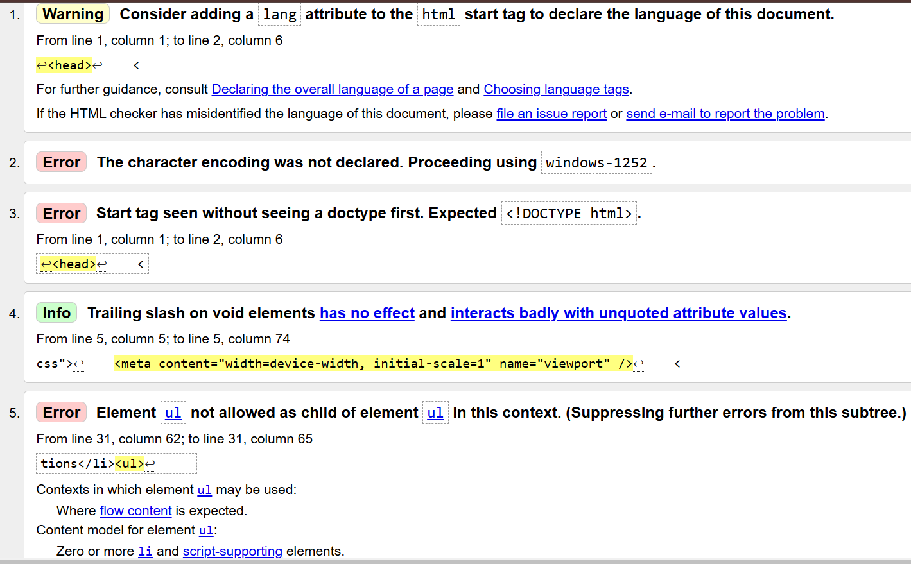
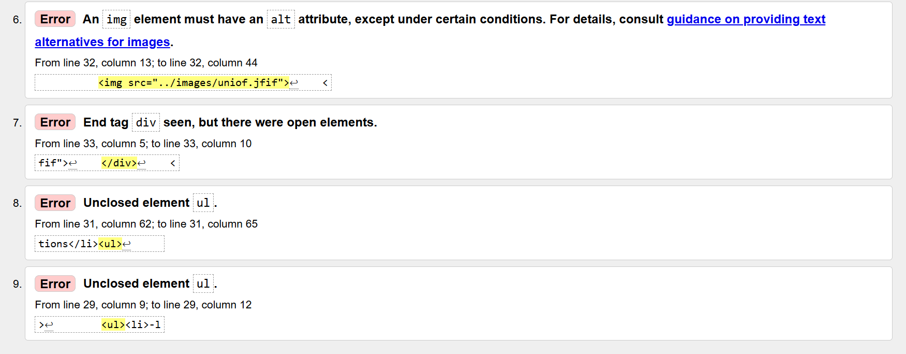
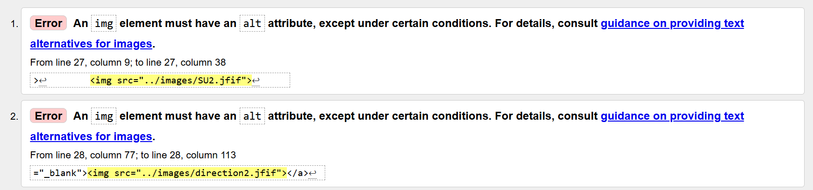
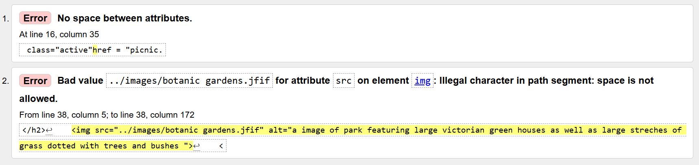
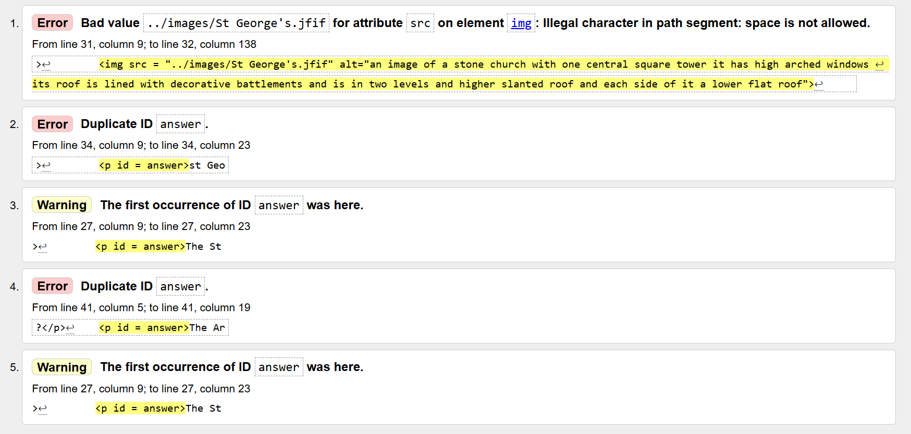
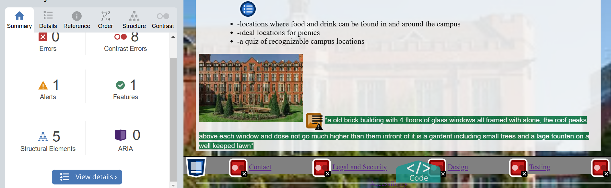

The website uses almost no line breaks opting for css rules to position the content where possible, minimal and somewhat low resolution pictures to avoid loading unnecessary content. I have used Google's built in mobile development tools to test the website through a range of mobile performances and viewports to check the loading times for each page when realistic or worse resources are available. I have used the html prefetching function on the index page to preload images and the other content pages in the header to the users browser so they do not have to wait for these more intensive pages to load. However I have not performed this for the non-content pages in the footer as to not lag the users browser and use up their and the web servers bandwidth when the site is first launched unnecessary, because these pages are less likely to be visited as most users will be uninterested.
All links for locations and for menus have been tested on each page to ensure that they function correctly. I have tested the website over a range of viewports to ensure that menus remain consistent and functional.





the website works perfectly on google chrome and microsoft edge, but has some difficulty with the position of the footer on firefox but still displays all its content and retains all functionality
